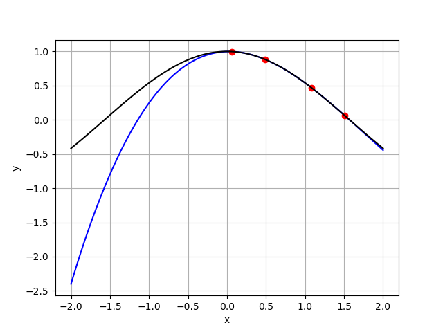
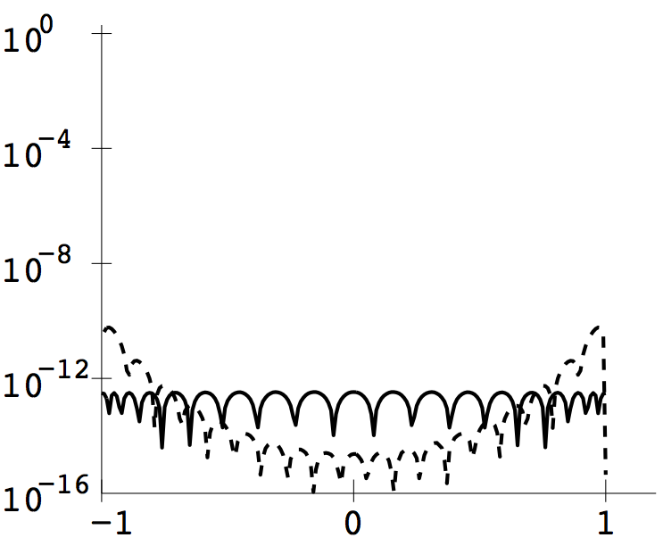

>> b=np.pi/4+(np.pi/4)*np.cos(np.array(list(range(1,9,2)))*np.pi/8);Then evaluating the output of the revised Program 3.3 on the interval \([-2,2]\) gives the following plot. Note that the interpolating polynomial lies on top of the curve \(y=\sin x\) at this resolution.

The part of Program 3.4 that moves any input between \(10^{-4}\) and \(10^4\) into the fundamental domain must also be changed. Since \(e^{10}>10^4\), the exponent \(k\) satisfying \(e^k\leq x\lt e^{k+1}\) can be found using Python code
k = 10
while exp(k) > x:
k = k-1
Now that \(xe^{-k}\) is in \([1,e]\), it can be substituted into the interpolation
polynomial, and the result is added to \(k\) to get the approximate natural
logarithm.
>> b=2*np.array(list(range(n)))/(n-1)-1or
>> b=np.cos(np.array(list(range(1,2*n+1,2)))*np.pi/(2*n))together with
>> yb=np.exp(-b**2) >> c=newtdd(b,yb)define the coefficients of the degree \(n-1\) interpolating polynomial for evenly-spaced or Chebyshev nodes, respectively. Setting \(n=10\) (left) or \(n=20\) (right) gives the interpolation curves below. For both \(n=10\) and \(20\), the evenly-spaced and Chebyshev interpolants are indistinguishable in the plot. On the left, the \(10\) evenly-spaced interpolation points are plotted and on the right, the Chebyshev nodes are shown.
The reason the curves are indistinguishable is clear when the empirical interpolation errors
are plotted, \(n=10\) (left) and \(n=20\) (right). The dashed curve is the interpolation error for
evenly-spaced interpolation, and the solid curve is the Chebyshev interpolation error. There
is a small hint of Runge phenomenon at the ends of the interval.
